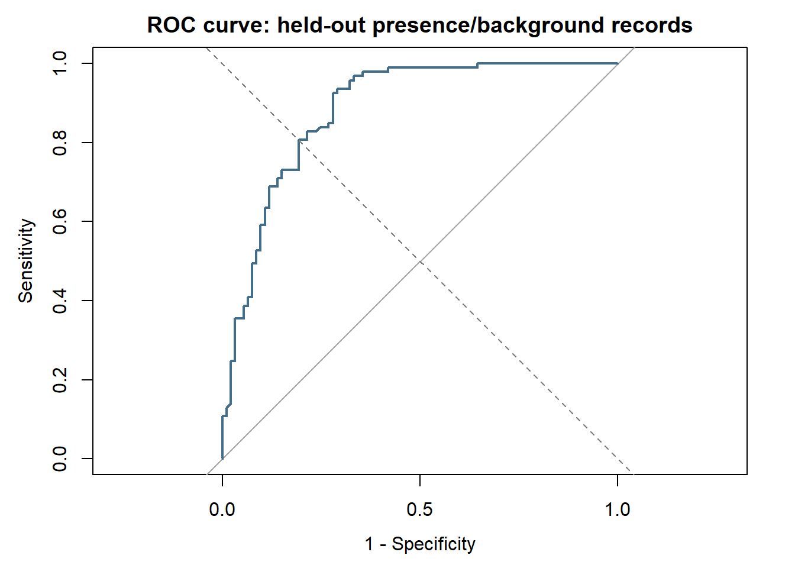
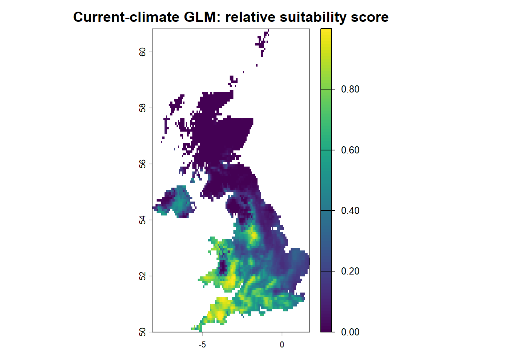
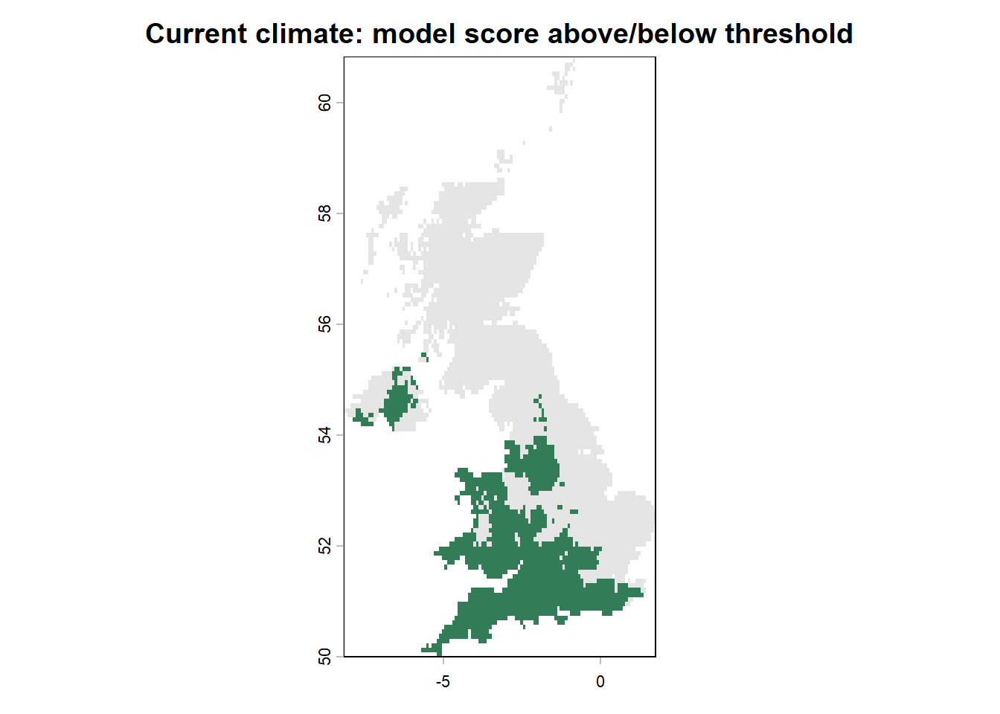
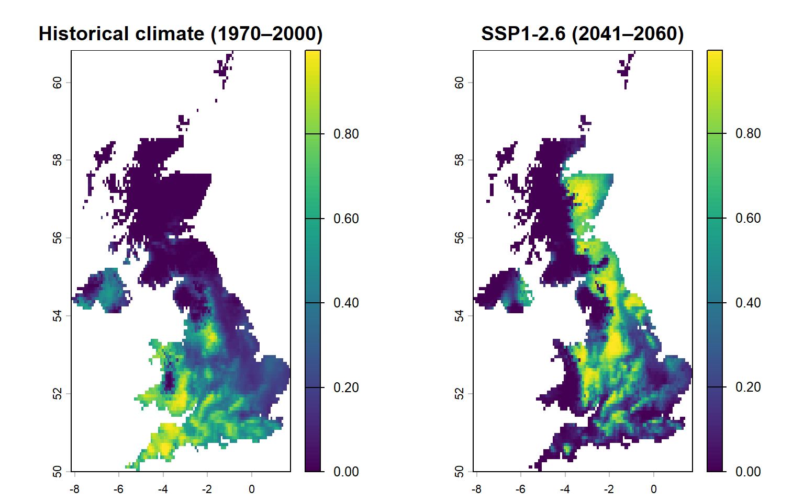
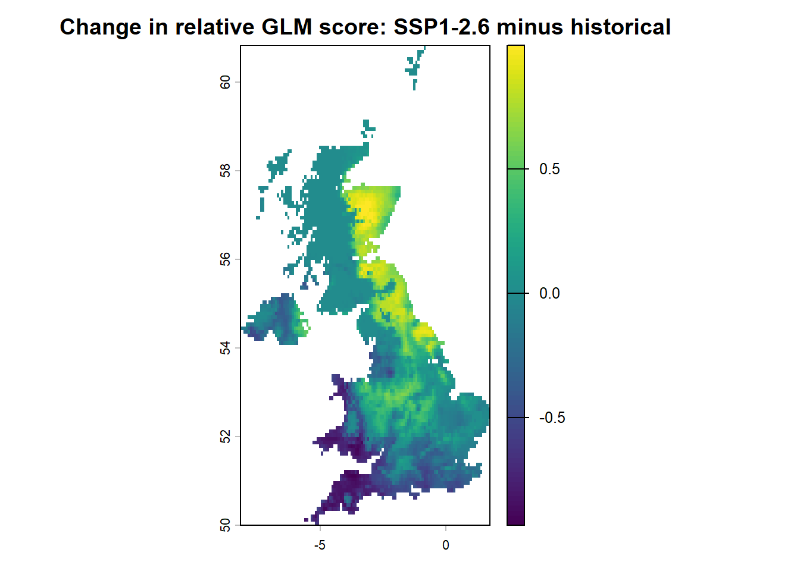

library(terra)
chapter6_checkpoint <- readRDS(
"data/checkpoints/glm_chapter6_results.rds"
)
sdm_df_train <- chapter6_checkpoint$sdm_df_train
sdm_df_test <- chapter6_checkpoint$sdm_df_test
glm_multi <- chapter6_checkpoint$glm_multi
proj_stack <- terra::rast(
"data/checkpoints/SDM_predictors_current.tif"
)Assessment and Projection
Evaluating a GLM and exploring current and future suitability
From a fitted model to an informed interpretation
In Fitting your first species distribution model, we fitted a binomial generalised linear model (GLM) to records of the lesser horseshoe bat (Rhinolophus hipposideros) and environmental conditions in the UK. We compared recorded presences with sampled background locations and mapped the fitted relative presence–background scores.
A fitted model is only the beginning. Before interpreting a map, we need to ask how well the model distinguishes observations it has not seen, what its evaluation measures actually represent, and how cautiously its relationships can be applied to another place or time.
TipLearning outcomes
By the end of the core practical, you should be able to:
- Explain the difference between model fit on training data and assessment using held-out test data.
- Calculate and interpret an ROC curve and AUC for a presence–background GLM.
- Select a score threshold using training data, then calculate sensitivity, specificity and TSS on test data.
- Interpret continuous and thresholded suitability maps without labelling background sites as confirmed absences.
- Apply the same GLM to verified 2041–2060 SSP1-2.6 climate data, and explain limitations of that projection.
Optional research extensions introduce the Continuous Boyce Index, interactive mapping, checks for novel climate conditions and spatially separated validation.
Start in your own RStudio project
Continue working in your own RStudio project and add the code to your annotated .R script. If you have completed Chapter 6 in the same R session, retain the fitted glm_multi and the objects sdm_df_train, sdm_df_test and proj_stack.
Each website page must also be able to run independently. The following setup reconstructs the standard teaching inputs and the same training split and model formula from Chapter 6 only when needed. It does not install packages, download data or fit unrelated algorithms. If you changed the background-sampling procedure or selected a different model in your own script, rerun your own preceding steps to preserve those choices.
NoteOptional: continue from a saved Chapter 6 checkpoint
If you saved the checkpoint described in Chapter 6, you can run this code first in your own RStudio script to restore the fitted model and test data from that analysis. The main setup below will then reuse these objects without refitting the standard GLM.
The files must come from the same Chapter 6 analysis; mixing a GLM with a different sampling design or raster predictor set would invalidate the comparison. If you did not save a checkpoint, simply continue with the standard setup.
library(terra)
library(ggplot2)
# Do not silently mix a model, split or predictor grid from different runs.
has_train <- exists("sdm_df_train", inherits = FALSE)
has_test <- exists("sdm_df_test", inherits = FALSE)
if (xor(has_train, has_test)) {
stop("Only one of the Chapter 6 train/test objects is present. ",
"Rerun Chapter 6 or restore both from the same checkpoint.")
}
if (has_train && !exists("proj_stack", inherits = FALSE)) {
stop("Training/test records exist but proj_stack is missing. ",
"Rerun Chapter 6 or restore its matching predictor checkpoint.")
}
if (exists("glm_multi", inherits = FALSE) && !has_train) {
stop("A fitted glm_multi exists without the Chapter 6 training data. ",
"Restore the full checkpoint or rerun the GLM practical.")
}
# If model inputs were not kept from the previous chapter,
# recreate its standard teaching data with the supplied helper.
if (!exists("proj_stack", inherits = FALSE) ||
(!exists("sdm_df_train", inherits = FALSE) ||
!exists("sdm_df_test", inherits = FALSE)) &&
!exists("sdm_df_clean", inherits = FALSE)) {
source("scripts/prepare_glm_inputs.R")
}
# Reproduce the SAME stratified 70/30 split as Chapter 6 when needed.
if (!exists("sdm_df_train", inherits = FALSE) ||
!exists("sdm_df_test", inherits = FALSE)) {
stopifnot(exists("sdm_df_clean", inherits = FALSE))
set.seed(2026)
presence_rows <- which(sdm_df_clean$pa == 1L)
background_rows <- which(sdm_df_clean$pa == 0L)
stopifnot(length(presence_rows) >= 5L,
length(background_rows) >= 5L)
trainIndex <- sort(c(
sample(presence_rows, floor(0.7 * length(presence_rows))),
sample(background_rows, floor(0.7 * length(background_rows)))
))
sdm_df_train <- sdm_df_clean[trainIndex, , drop = FALSE]
sdm_df_test <- sdm_df_clean[-trainIndex, , drop = FALSE]
}
# Refit the Chapter 6 teaching formula only if no fitted model exists.
if (!exists("glm_multi", inherits = FALSE)) {
glm_multi <- glm(
pa ~ poly(elevation, 2) + poly(bio_1, 2) +
poly(bio_12, 2),
data = sdm_df_train,
family = binomial(link = "logit")
)
}
model_predictors <- c("bio_1", "bio_12", "elevation")
stopifnot(
inherits(glm_multi, "glm"),
inherits(proj_stack, "SpatRaster"),
all(model_predictors %in% names(proj_stack)),
all(c("pa", model_predictors) %in% names(sdm_df_train)),
all(c("pa", model_predictors) %in% names(sdm_df_test)),
all(sdm_df_train$pa %in% c(0, 1)),
all(sdm_df_test$pa %in% c(0, 1)),
all(c(0, 1) %in% sdm_df_test$pa)
)
table(Training = sdm_df_train$pa)Training
0 1
216 216 table(Test = sdm_df_test$pa)Test
0 1
93 93 The test subset stays separate. Do not use its results to choose predictor variables, decide which GLM to keep or tune a classification threshold. The same distinction applies when you design spatial cross-validation for an independent research project.
NoteModel fit, assessment and projection
Model fit: How closely does the GLM describe the observations used to estimate its coefficients? Chapter 6 examined training-data results such as deviance and AIC.
Model assessment: How well does the fitted model distinguish the labels of previously unseen records? Here, our test data are held out from the same presence–background dataset.
Projection: What score does the fitted model assign to every grid cell when we supply environmental predictors for that location or a future scenario?
Our random split is a teaching demonstration. Nearby bat records and background cells can have similar conditions, so randomly held-out data may still overstate performance in an independent geographic region. Spatially separated evaluation and independent surveys are important research alternatives.
1. Assess the GLM using held-out data
1.1 Predict the test records
Our GLM was fitted with family = binomial(link = "logit"). Calling predict(..., type = "response") gives a value between 0 and 1 for each test record, representing the fitted presence-versus-background classification score under our sampling design. This is not a verified probability of species occurrence.
obs_test <- as.integer(as.character(sdm_df_test$pa))
glm_predict_test <- as.numeric(predict(
glm_multi, newdata = sdm_df_test, type = "response"
))
stopifnot(all(is.finite(glm_predict_test)),
all(glm_predict_test >= 0 & glm_predict_test <= 1))
head(data.frame(
observed_label = obs_test,
predicted_score = round(glm_predict_test, 3)
)) observed_label predicted_score
1 1 0.671
2 1 0.366
3 1 0.448
4 1 0.683
5 1 0.606
6 1 0.740Inspect: Do the test records labelled pa = 1 generally receive higher fitted scores than the test records labelled pa = 0? Remember that pa = 0 means a sampled background location, not that a bat was proven absent.
1.2 Examine the ROC curve and AUC
The receiver operating characteristic (ROC) curve compares sensitivity and the false-positive rate across possible score thresholds. The area under the curve (AUC) summarises how successfully the model ranks test presences above test background points.
An AUC of approximately 0.5 indicates little ranking discrimination; 1 indicates perfect separation for the evaluated sample. There is no universally reliable AUC cut-off that establishes ecological validity. Scores depend on the study region, sampling and test design.
if (!requireNamespace("pROC", quietly = TRUE)) {
stop("Install the 'pROC' package using the workshop homepage instructions.")
}
roc_glm <- pROC::roc(
response = obs_test,
predictor = glm_predict_test,
levels = c(0, 1), # background = controls; presence = cases
direction = "<", # larger scores should indicate presence labels
quiet = TRUE
)
auc_glm <- as.numeric(pROC::auc(roc_glm))
cat("Held-out test AUC:", round(auc_glm, 3), "\n")Held-out test AUC: 0.883 plot(roc_glm, col = "#426d8b", lwd = 2,
main = "ROC curve: held-out presence/background records",
legacy.axes = TRUE)
abline(0, 1, lty = 2, col = "grey50")
Interpret: What does AUC tell us about distinguishing sampled presences from sampled background locations? Could a spatially clustered dataset appear easier to predict when nearby sites are split at random between training and test sets?
NoteHow to read the ROC curve
- Sensitivity is the fraction of recorded presences ranked above a chosen threshold.
- Specificity is the fraction of sampled background locations ranked below that threshold. It is not the proportion of confirmed biological absences correctly identified.
- The ROC curve shows the trade-off between sensitivity and 1 − specificity as the threshold changes.
- AUC measures discrimination across these thresholds. It does not establish that a model is well calibrated, causally correct or transferable under future climate.
2. Thresholds, sensitivity, specificity and TSS
Some applications require a simplified classification such as higher versus lower modelled suitability. Converting a continuous GLM score into two classes requires a threshold, and different thresholds lead to different classifications.
Core practical. We choose the threshold using the training subset, then apply that fixed threshold to the held-out test subset. Choosing whichever threshold produces the best test result would make the assessment overly optimistic.
2.1 Select a threshold from training predictions
Here we select the threshold maximising sensitivity + specificity − 1 (Youden’s J, also equivalent to the training-set TSS). This is a convenient demonstration, not a universally preferable conservation threshold.
obs_train <- as.integer(as.character(sdm_df_train$pa))
train_scores <- as.numeric(predict(
glm_multi, newdata = sdm_df_train, type = "response"
))
stopifnot(all(is.finite(train_scores)),
all(c(0L, 1L) %in% obs_train))
# Consider each distinct score as a potential threshold.
candidate_thresholds <- sort(unique(train_scores))
training_sensitivity <- vapply(candidate_thresholds, function(t) {
mean(train_scores[obs_train == 1L] >= t)
}, numeric(1))
training_specificity <- vapply(candidate_thresholds, function(t) {
mean(train_scores[obs_train == 0L] < t)
}, numeric(1))
best_threshold_index <- which.max(
training_sensitivity + training_specificity - 1
)
chosen_thresh <- candidate_thresholds[best_threshold_index]
cat("Training-selected score threshold:",
round(chosen_thresh, 3), "\n")Training-selected score threshold: 0.374 2.2 Apply the threshold to the test data
We now compute a confusion table and the True Skill Statistic (TSS). With presence–background data, the calculation assesses discrimination of the assigned labels, not verified biological presence and absence.
pred_binary <- as.integer(glm_predict_test >= chosen_thresh)
cm <- table(
Observed = factor(obs_test, levels = c(0, 1),
labels = c("Background", "Presence")),
Predicted = factor(pred_binary, levels = c(0, 1),
labels = c("Lower score", "Higher score"))
)
print(cm) Predicted
Observed Lower score Higher score
Background 63 30
Presence 5 88test_sensitivity <- mean(pred_binary[obs_test == 1L] == 1L)
test_specificity <- mean(pred_binary[obs_test == 0L] == 0L)
test_tss <- test_sensitivity + test_specificity - 1
data.frame(
Sensitivity = round(test_sensitivity, 3),
Specificity = round(test_specificity, 3),
TSS = round(test_tss, 3)
) Sensitivity Specificity TSS
1 0.946 0.677 0.624Inspect: How many recorded presences were classified above the threshold? What does an incorrectly classified background sample mean, given that the site may actually be suitable or occupied?
Change: Try a slightly higher or lower threshold in your own script without using this comparison to retune the model against the test set. What happens to the balance between sensitivity and specificity? For applied work, document the threshold-selection rule in advance or choose it on training/validation data according to the decision being made.
WarningWhy a threshold is not an ecological boundary
A binary map divides the model’s predicted scores into higher and lower categories. It does not demonstrate that a species is present on one side of the threshold and absent on the other. Thresholding also discards differences among locations with similar scores. Retain and interpret the continuous map alongside any binary classification.
3. Project the model across current environmental conditions
The three predictors in proj_stack—annual mean temperature (bio_1), annual precipitation (bio_12) and elevation—have matching names and spatial grids. We can apply the same training-fitted GLM to each cell containing complete predictor data.
3.1 Map continuous suitability scores
if (!exists("glm_suitability_map", inherits = FALSE)) {
glm_suitability_map <- terra::predict(
proj_stack, glm_multi, type = "response", na.rm = TRUE
)
}
names(glm_suitability_map) <- "relative_suitability"
plot(glm_suitability_map,
main = "Current-climate GLM: relative suitability score")
The continuous map represents relative scores conditional on the model and background-sampling design. It is not an independently observed bat distribution and is not a map of absolute occupancy probability.
3.2 Map the thresholded score classes
We can apply the training-selected threshold to the same raster. The categories are labelled higher and lower relative scores, not presence and absence.
binary_map <- terra::ifel(
glm_suitability_map >= chosen_thresh, 1, 0
)
names(binary_map) <- "score_class"
plot(binary_map,
col = c("#e5e5e5", "#327c57"),
breaks = c(-0.5, 0.5, 1.5),
legend = FALSE,
main = "Current climate: model score above/below threshold")
legend("bottomleft",
legend = c("Below threshold", "At/above threshold"),
fill = c("#e5e5e5", "#327c57"), bty = "n")
Inspect: Which parts of the UK receive higher modelled scores? Do the thresholded classes conceal important variation visible in the continuous map? Consider climate, observation effort and the model’s assumptions before drawing ecological conclusions.
TipResearch extension: explore an interactive map
The interactive map overlays the two model outputs, rather than displaying precise occurrence coordinates on a public website. It uses the standard OpenStreetMap basemap (addTiles()), which does not require a CARTO API key. Map tiles still require an internet connection, whereas the static maps above are available directly in the rendered page.
The map is for exploration. The reproducible static plots remain the primary figures in the core practical.
4. Project under future climate: CMIP6 SSP1-2.6
A temporal projection applies the fitted relationship between the sampled presences, background locations and environmental predictors to different environmental conditions. It is a conditional modelling exercise—not a prediction of exactly where bats will live in future decades.
The prepared future climate data were downloaded and verified in Environmental Data:
| Dataset feature | Workshop example |
|---|---|
| Historical reference | WorldClim 2.1 bioclimatic data, 1970–2000 |
| Global climate model | BCC-CSM2-MR |
| Future scenario | SSP1-2.6 (ssp = "126") |
| Future period | 2041–2060 |
| Resolution | 5 arc-minutes, aligned to the historical teaching grid |
| File | data/Clim_cmip6_2041_2060_UK.tif |
This is not the higher-emissions SSP5-8.5 scenario. The example reflects one model and one scenario, rather than the full range of climate-projection uncertainty.
4.1 Load and check the prepared future climate data
The file supplied with the updated workshop data must contain actual future-climate values. If your copy of the GeoTIFF is missing or still contains the old, incorrect historical data, replace it with the verified file prepared in the Environmental Data chapter before proceeding.
future_file <- "data/Clim_cmip6_2041_2060_UK.tif"
historical_file <- "data/Clim_UK.tif"
stopifnot(file.exists(future_file), file.exists(historical_file))
Clim_UK <- terra::rast(historical_file)
Clim_cmip6_2041_2060_UK <- terra::rast(future_file)
stopifnot(
terra::nlyr(Clim_cmip6_2041_2060_UK) == 19,
identical(names(Clim_cmip6_2041_2060_UK), names(Clim_UK)),
terra::compareGeom(Clim_cmip6_2041_2060_UK, Clim_UK),
all(model_predictors[1:2] %in% names(Clim_cmip6_2041_2060_UK))
)
# A former teaching-file version duplicated the historical raster.
# Stop if the downloaded 'future' BIO1 is identical or contains no values.
temp_difference <- (
Clim_cmip6_2041_2060_UK[["bio_1"]] - Clim_UK[["bio_1"]]
)
max_abs_temperature_change <- terra::global(
abs(temp_difference), "max", na.rm = TRUE
)[[1]]
if (!is.finite(max_abs_temperature_change) ||
max_abs_temperature_change < 1e-8) {
stop("The future raster is empty or identical to historical BIO1. ",
"Replace it with the verified SSP1-2.6 future GeoTIFF.")
}
# Inspect the observed range in the prepared comparison.
terra::global(temp_difference, "range", na.rm = TRUE) min max
bio_1 1.164557 1.978635In the verified preparation example, annual mean temperature increased by approximately 1.2–1.9°C across the mapped UK cells. Your displayed range should be checked against the actual GeoTIFF. The changes describe the selected climate-model scenario, not observed changes or a guaranteed regional forecast.
4.2 Supply future climate to the fitted GLM
Our GLM uses temperature, precipitation and elevation. Only the two climate layers change in this example: elevation is kept fixed as a simplifying assumption. The predictor names, units and raster grid must match those used for model fitting.
future_stack <- c(
Clim_cmip6_2041_2060_UK[[c("bio_1", "bio_12")]],
proj_stack[["elevation"]]
)
names(future_stack) <- model_predictors
stopifnot(
terra::compareGeom(future_stack, proj_stack),
identical(names(future_stack), names(proj_stack))
)
# Apply the SAME Chapter 6 training-fitted GLM under future conditions.
future_suitability <- terra::predict(
future_stack, glm_multi, type = "response", na.rm = TRUE
)
names(future_suitability) <- "relative_suitability_future"4.3 Compare current and future modelled suitability
plot(c(glm_suitability_map, future_suitability),
main = c("Historical climate (1970–2000)",
"SSP1-2.6 (2041–2060)"))
The two maps show modelled presence–background scores under different climate conditions. Their colours should be read with attention to the legends; for direct comparison, the difference map below is more informative than visually comparing separate automatic colour scales.
suitability_change <- future_suitability - glm_suitability_map
names(suitability_change) <- "future_minus_current"
plot(suitability_change,
main = "Change in relative GLM score: SSP1-2.6 minus historical")
Inspect: Which areas show increasing or decreasing modelled suitability scores? Does an increase in the fitted score imply that lesser horseshoe bats will colonise those locations? Explain why factors such as dispersal, land use, roost availability and other ecological interactions also matter.
Important: The change map shows a difference between two model predictions. It does not estimate a change in occupancy probability, abundance, range size or conservation status.
NoteWhat makes future projections uncertain?
- Climate scenario and GCM: Other SSPs or global climate models can produce different regional conditions.
- Transferability: The relationships fitted using present-day presence–background samples may change through time.
- Environmental novelty: Some future predictor combinations may fall outside conditions represented in training data; GLM response curves can extrapolate into these poorly supported regions.
- Missing processes: Habitat management, roost availability, dispersal and biotic interactions are not included in this simple model.
- Survey bias and resolution: Presence records, background selection and coarse climate grids influence the mapped relationships.
For an independent research assessment, consider multiple climate models, multiple scenarios and explicit spatial or temporal validation.
4.4 Research extension: check for unfamiliar future conditions
A simple first check asks whether projected temperature or precipitation falls outside the range represented in the training dataset. This does not detect every novel combination of variables, but it identifies one important type of extrapolation.
novel_temperature <-
future_stack[["bio_1"]] < min(sdm_df_train$bio_1) |
future_stack[["bio_1"]] > max(sdm_df_train$bio_1)
novel_precipitation <-
future_stack[["bio_12"]] < min(sdm_df_train$bio_12) |
future_stack[["bio_12"]] > max(sdm_df_train$bio_12)
novel_conditions <- novel_temperature | novel_precipitation
plot(novel_conditions,
main = "Outside at least one training predictor range")Explain: Why should predictions outside the training-data range be interpreted with greater caution even if terra::predict() successfully produces numbers?
5. Additional research approaches
TipContinuous Boyce Index (optional)
The Continuous Boyce Index (CBI) compares the distribution of suitability scores at known presences with the distribution of scores across the available study region. It is particularly relevant to presence-only SDMs, but its interpretation depends on the study extent, availability sample, sample size and spatial bias. It does not by itself provide independent proof that a model is ecologically accurate.
The optional code below uses scores across available raster cells as fit and held-out presence scores as obs. It does not incorrectly substitute a mixed vector of test presence/background predictions for study-region availability. This runs only when you choose to explore it in RStudio.
library(ecospat)
# Scores from the available study grid.
available_scores <- terra::values(
glm_suitability_map, mat = FALSE, na.rm = TRUE
)
presence_scores <- glm_predict_test[obs_test == 1L]
boyce_res <- ecospat::ecospat.boyce(
fit = available_scores,
obs = presence_scores,
nclass = 0,
PEplot = TRUE
)
boyce_res$corA positive Boyce correlation suggests that observed presences tend to fall in cells with higher predicted scores than expected from the available region. Results can be unstable with few presences and are sensitive to availability and sampling design.
TipFinal model fitting after assessment (optional)
For an independent research analysis, a final GLM may be refitted to the full available dataset after the model structure, tuning decisions and evaluation procedure have been finalised. Its purpose is to use all suitable calibration data for subsequent projection. This does not change the previously obtained held-out AUC or TSS, and those evaluation measures must not be recalculated using the refitted model and the same test records.
# Only after model choices and held-out assessment are complete:
all_calibration_data <- rbind(sdm_df_train, sdm_df_test)
final_glm <- glm(
formula(glm_multi),
data = all_calibration_data,
family = binomial(link = "logit")
)
# A full-data final map is a new product; preserve the assessed
# training-fitted model and its independent test results separately.
final_suitability <- terra::predict(
proj_stack, final_glm, type = "response", na.rm = TRUE
)Do not automatically carry over the earlier training-selected threshold to a different refitted model without checking the classification rule. For real-world SDMs, consider spatially separated evaluation, explicit predictor selection and external observations where available.
6. Practise, interpret and extend
NoteCore practical — complete these before moving on
- Calculate the held-out ROC curve and AUC. Explain what the comparison between presences and background sites measures.
- Choose a score threshold from training data, then report sensitivity, specificity and TSS for the held-out test subset.
- Display continuous and thresholded current-climate maps. Why is it incorrect to label the resulting cells as confirmed presences or absences?
- Load the verified SSP1-2.6 climate file and compare future and historical modelled scores. Explain one source of uncertainty in the projection.
Optional research extensions
- Explore how a different training-selected threshold changes the balance of sensitivity and specificity.
- Calculate the Continuous Boyce Index and describe its dependence on study-area availability and occurrence sampling.
- Identify future cells with predictor values outside the training range.
- Explain why spatially separated cross-validation may give a different assessment from a random data split.
- Compare projections across additional GCMs and SSPs, without assuming that a single scenario defines the future.
Further reading
- Araújo et al. (2005). Validation of species–climate impact models under climate change.
- Hirzel et al. (2006). Evaluating the ability of habitat suitability models to predict species presences.
- Liu et al. (2005). Selecting thresholds of occurrence in the prediction of species distributions.
- Phillips et al. (2009). Sample selection bias and presence-only distribution models.
- Zurell et al. (2020). A standard protocol for reporting species distribution models.
- WorldClim CMIP6 projections and
geodata::cmip6_world()documentation.
Next: Explore Fitting and Comparing Algorithms, where different modelling approaches are considered in relation to data, modelling objectives and validation design.